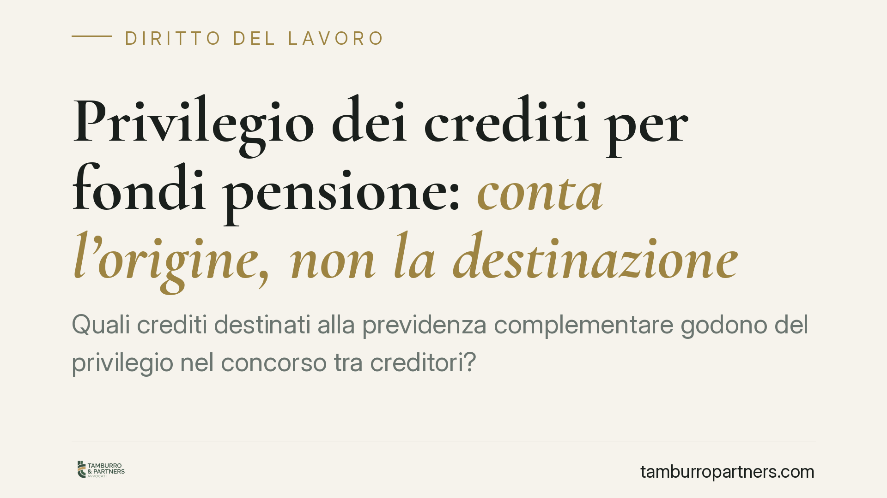

Privilegio dei crediti per fondi pensione: conta l'origine, non la destinazione
Quali crediti destinati alla previdenza complementare godono del privilegio nel concorso tra creditori? La questione separa i crediti che nascono dal rapporto di lavoro da quelli di natura contributiva a carico del datore. La distinzione pesa su curatori, fondi pensione e lavoratori quando il patrimonio del debitore non basta a soddisfare tutti. Ecco i criteri e le ricadute operative.

Il caso
La controversia nasce dall'insinuazione al passivo di crediti maturati nell'ambito della previdenza complementare: contributi destinati a un fondo pensione negoziale, quote di TFR conferite al fondo e somme a carico del datore di lavoro. Il nodo è classificatorio: tutti questi crediti possono beneficiare del privilegio generale sui mobili previsto per le retribuzioni e il trattamento di fine rapporto, oppure solo alcuni?
La risposta non è neutra. In un concorso di creditori — fallimento, liquidazione giudiziale, piano di riparto — il privilegio determina l'ordine di soddisfazione. Un credito privilegiato viene pagato prima dei crediti chirografari (privi di garanzia). Quando l'attivo è insufficiente, la qualificazione fa la differenza tra essere pagati e restare a bocca asciutta.
Inquadramento normativo
L'art. 2751-bis n. 1 c.c. attribuisce privilegio generale sui mobili ai crediti dei prestatori di lavoro subordinato per le retribuzioni e per le indennità dovute per effetto della cessazione del rapporto, tra cui il TFR. Il perimetro letterale è questo: crediti che hanno origine diretta nel rapporto di lavoro e nella prestazione resa.
Diverso è il piano del danno da omessa contribuzione, che trova fondamento nell'art. 2116 c.c. e nella giurisprudenza in materia: non si tratta di una voce retributiva, ma del pregiudizio subito dal lavoratore per il mancato versamento. Non va confuso con le componenti tutelate dal n. 1.
Il finanziamento della previdenza complementare è disciplinato dall'art. 8 del d.lgs. 252/2005, che individua le fonti di alimentazione delle posizioni individuali: il contributo a carico del lavoratore, l'eventuale contributo a carico del datore e il conferimento del TFR maturando. Sono tre flussi con genesi distinta, e la distinzione è decisiva.
La distinzione: origine vs destinazione
Il criterio dirimente non è *dove* il credito è destinato, ma *da dove* nasce.
La destinazione al fondo pensione è irrilevante ai fini del privilegio. Il fatto che una somma confluisca nella previdenza complementare non ne muta la natura originaria. Conta ciò che quella somma rappresenta nel rapporto di lavoro.
Su questa base:
- Il TFR maturando conferito al fondo conserva la natura di indennità di fine rapporto. Rientra nel privilegio ex art. 2751-bis n. 1 c.c.
- Il contributo a carico del lavoratore è trattenuto sulla retribuzione: è parte del credito retributivo e segue la medesima sorte privilegiata.
- Il contributo a carico del datore di lavoro, di natura previdenziale, non è retribuzione né indennità di fine rapporto. Non trova collocazione nel n. 1: la sua eventuale tutela va cercata su basi diverse.
La logica è coerente con la funzione del privilegio, che protegge il lavoratore in quanto titolare di crediti nascenti dalla propria prestazione, non il fondo in quanto tale.
Implicazioni pratiche
Per il curatore della liquidazione giudiziale cambia il modo di costruire lo stato passivo: le somme legate alla previdenza complementare vanno scomposte per origine, non ammesse in blocco come crediti privilegiati.
Per il fondo pensione che si insinua al passivo, la pretesa va articolata voce per voce, indicando per ciascuna il titolo e la natura. Insinuare l'intero montante come privilegiato espone al rischio di contestazione.
Per il lavoratore e per il Fondo di garanzia INPS, la qualificazione incide sull'effettiva recuperabilità delle somme e sul perimetro dell'intervento di garanzia.
Cosa fare in concreto
- Scomponi il credito per origine. Separa TFR conferito, contributi a carico del lavoratore e contributi a carico del datore: ciascuna voce ha una qualificazione autonoma.
- Documenta la natura di ogni voce. Allega buste paga, prospetti di versamento e regolamento del fondo per dimostrare da dove nasce la somma.
- Non assimilare il danno da omessa contribuzione al credito retributivo. Trattalo separatamente, con fondamento ex art. 2116 c.c., evitando collocazioni improprie nel riparto.
- Verifica i piani di riparto non ancora definitivi. È opportuno riesaminare le classificazioni già operate alla luce del criterio origine/destinazione.
- Coordina la pretesa con l'intervento del Fondo di garanzia INPS, individuando con precisione le componenti coperte.
Disclaimer
Contributo informativo a cura di Tamburro & Partners - Avv. Giuseppe Tamburro. Non costituisce parere legale.
Ogni storia di lavoro ha i suoi tempi.
Se gestisci HR e vuoi un confronto su contenzioso, ispezioni o licenziamenti, scrivi allo studio. Ti rispondiamo entro un giorno lavorativo.